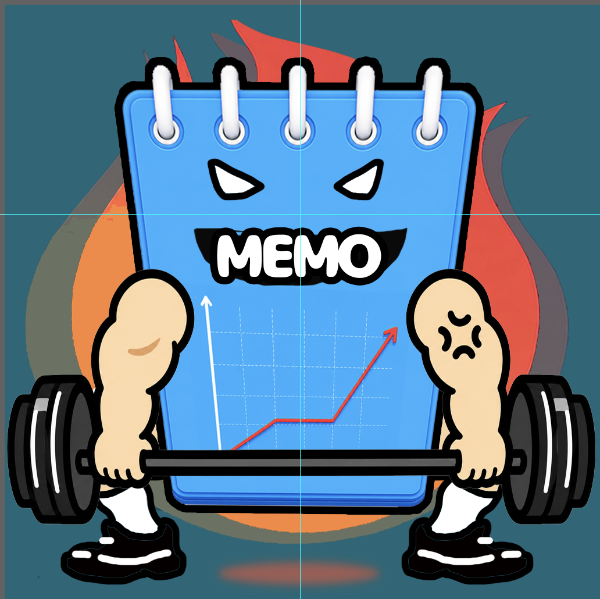

自分で作る単語帳〜暗記無双〜iOS無料PC連携
耳からの聞き流しと自動再生、PC・Chrome拡張連携、SNSアプリブロック、全問正解アラームを搭載した自作単語帳アプリ。
筋トレの時間を計る。ジャンプや動作を分析する。耳から英文を身につける。
日々の成長をデータと仕組みで支えるプロダクトを開発しています。
kpworksのアプリ
耳からの聞き流しと自動再生、PC・Chrome拡張連携、SNSアプリブロック、全問正解アラームを搭載した自作単語帳アプリ。
動画からタイムや垂直跳びを精密自動測定。AI骨格表示や2動画の並列同期比較によるフォーム解析も可能です。（旧：タイム測定 - 垂直跳び測定）
運動と休憩のインターバル時間を自由に設定。音楽をバックグラウンド再生しながらテンポよくトレーニングを管理。
20mシャトルランの公式音源再生と測定結果の記録・管理に。学校や部活動の体力測定に最適。

筋トレの記録とメニュー共有のためのアプリ。ブラウザで使えるメニュー集を先行公開中。
App StoreやGoogle Play向けのスクリーンショット・紹介画像をブラウザ上で美しくデザインできる制作ツール。
英文を意味のまとまり（スラッシュ）で区切って読むための学習アプリ。現在準備中です。
ブラウザで使う
インストールせずに今すぐ使えます。
筋トレガイド
kpworksが開発するアプリと、筋トレのメニュー・記録・計測に役立つ情報をまとめています。英語の練習には、ブラウザで動くSlashTyperもどうぞ。